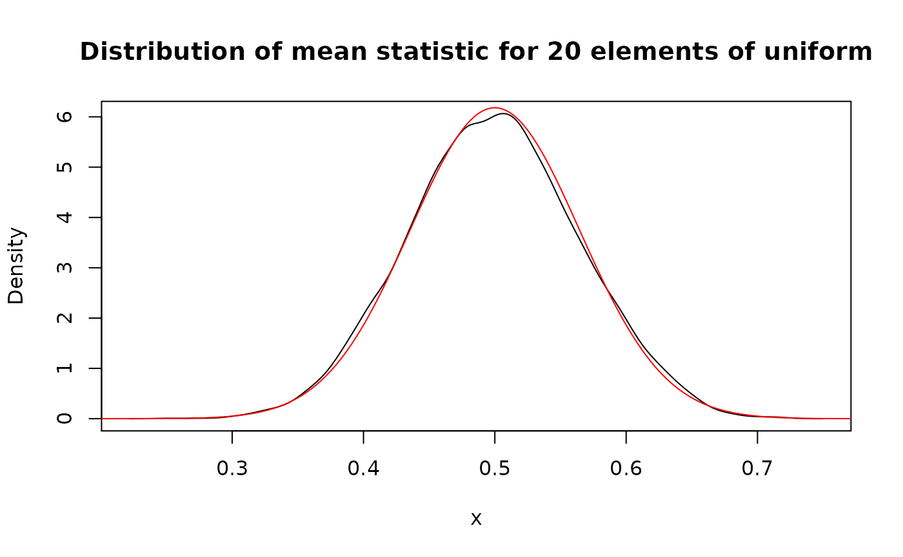

Transform pdqr-functions with form_*() and base operations
Source: vignettes/pdqr-03-transform.Rmd
pdqr-03-transform.RmdConcept of form functions is to take one or more pdqr-function(s) and return a transformed pdqr-function. Argument method is used to choose function-specific algorithm of computation.
Transformation of pdqr-functions can be done with form_*() family or with base R operators (implemented with S3 group generic functions).
form_*() family
There are several form_*() functions. Here are some important examples. For more information, please, browse documentation.
form_trans()
form_trans() performs a transformation of input pdqr-function(s) (assumed to represent independent distributions). Default method is “random” which works based on random simulation: generates sample(s) from input pdqr-function(s), calls transformation function on them, and creates output pdqr-function based on transformation output.
# Transformation function should be vectorized
trans_fun <- function(x, y) {sin(x * y)}
d_norm <- as_d(dnorm)
d_unif <- as_d(dunif)
# Output's support has values outside of [-1; 1] interval, which is impossible
# with `sin()` function. This is because of "extending property" of `density()`.
(d_transformed <- form_trans(list(d_norm, d_unif), trans = trans_fun))
#> Density function of continuous type
#> Support: ~[-1.162, 1.162] (511 intervals)
# One way of dealing with this is to set `cut = 0` as argument for `density()`
# which is called in `new_*()`. The other way is to use `form_resupport()`.
(d_transformed_2 <- form_trans(
list(d_norm, d_unif), trans = trans_fun,
args_new = list(cut = 0)
))
#> Density function of continuous type
#> Support: ~[-1, 1] (511 intervals)
plot(d_transformed, col = "black", main = "Transformations of distribution")
# `d_transformed_2()` differs slightly because of randomness involved
lines(d_transformed_2, col = "blue")
The other method is “bruteforce”, which converts input function(s) to have type “discrete”, applies function to all possible combinations of output values, creates pdqr-function based on output, and possibly converts back to “continuous” type. This method is very time consuming and might be useful only when applied to “discrete” functions with not many combinations of “x” values.
d_binom <- as_d(dbinom, size = 10, prob = 0.3)
(d_binom_transformed <- form_trans(
list(d_binom, d_binom), trans = trans_fun, method = "bruteforce"
))
#> Probability mass function of discrete type
#> Support: ~[-0.99389, 0.99061] (43 elements)
head(meta_x_tbl(d_binom_transformed))
#> x prob cumprob
#> 1 -0.9938887 1.708524e-08 1.708524e-08
#> 2 -0.9917789 1.406216e-03 1.406233e-03
#> 3 -0.9880316 7.569145e-03 8.975378e-03
#> 4 -0.9589243 2.491900e-02 3.389438e-02
#> 5 -0.9537527 8.103046e-05 3.397541e-02
#> 6 -0.9165215 6.617487e-04 3.463716e-02
# Compare "bruteforce" output to "random" output
d_binom_transformed_random <- form_trans(
list(d_binom, d_binom), trans = trans_fun, method = "random"
)
head(meta_x_tbl(d_binom_transformed_random))
#> x prob cumprob
#> 1 -0.9917789 0.0017 0.0017
#> 2 -0.9880316 0.0082 0.0099
#> 3 -0.9589243 0.0240 0.0339
#> 4 -0.9537527 0.0002 0.0341
#> 5 -0.9165215 0.0005 0.0346
#> 6 -0.9055784 0.0140 0.0486
form_resupport() and form_tails()
form_resupport() transforms distribution to have support predefined by one or both edges. This might be useful when dealing with “extending property” of density() function in case of known value boundaries (for which default method “reflect” suits best). Continuing previous section:
plot(
d_transformed, col = "black",
main = "Different methods of `form_resupport()`"
)
# Reflect density tails outside of desired support to be inside
lines(
form_resupport(d_transformed, support = c(-1, 1), method = "reflect"),
col = "blue"
)
# Remove those tails while renormalizing density
lines(
form_resupport(d_transformed, support = c(-1, 1), method = "trim"),
col = "red"
)
# Concentrate those tails on edges of desired support
lines(
form_resupport(d_transformed, support = c(-1, 1), method = "winsor"),
col = "green"
)
# Warp support linear to be desired support
lines(
form_resupport(d_transformed, support = c(-1, 1), method = "linear"),
col = "magenta"
)
form_tails() also modifies support of input distribution by removing its tail(s). Removed amount is defined by level - total probability of tail. This function is useful for computing robust versions of distributions.
plot(d_norm, col = "black", main = "Different methods of `form_tails()`")
# Remove tail(s) completely with `method = "trim"`. By default, tails from both
# sides are removed
lines(form_tails(d_norm, level = 0.05, method = "trim"), col = "blue")
# Concentrate probability on edge(s) with `method = "winsor"`
lines(
form_tails(d_norm, level = 0.1, method = "winsor", direction = "right"),
col = "red"
)
# Use `form_resupport()` and `as_q()` to remove different levels from both
# directions. Here 0.1 level tail from left is removed, and 0.05 level from
# right
new_supp <- as_q(d_norm)(c(0.1, 1-0.05))
form_resupport(d_norm, support = new_supp, method = "trim")
#> Density function of continuous type
#> Support: ~[-1.28155, 1.64485] (3080 intervals)
form_recenter() and form_respread()
During hypothesis testing there is usually a need to alter some existing distribution to have certain center and/or spread. Functions form_recenter() and form_respread() implement linear transformations that accomplish this goal:
my_beta <- as_d(dbeta, shape1 = 1, shape2 = 3)
# Distribution is shifted to the right so as to have mean (default method of
# `summ_center()`) equal to 2
my_beta2 <- form_recenter(my_beta, to = 2)
summ_center(my_beta2)
#> [1] 2
# Distribution is stretched around its center so as to have range equal to 10
my_beta3 <- form_respread(my_beta2, to = 10, method = "range")
summ_spread(my_beta3, method = "range")
#> [1] 10
# Center remains unchainged
summ_center(my_beta3)
#> [1] 2
form_mix()
form_mix() results into mixture of distributions. Input can have both types of pdqr-functions. Output will be “discrete” only if all inputs have “discrete” type. If at least one input pdqr-function has “continuous” type, all possible “discrete” inputs are converted to be “continuous” type (with form_retype() and method “dirac”) in form of mixture of dirac-like “continuous” functions. Note that output can have many piecewise-linear intervals, and to reduce their amount (with possible accuracy loss) use form_regrid().
# All inputs have the same type
dis_list <- list(
as_d(dbinom, size = 10, prob = 0.3),
as_d(dpois, lambda = 10)
)
plot(form_mix(dis_list), main = "Mixture of binomial and Poisson")
norm_list <- list(as_d(dnorm), as_d(dnorm, mean = 4))
plot(
form_mix(norm_list, weights = c(0.3, 0.7)),
main = "Mixture of normal distributions"
)
# Here all "discrete" pdqr-functions are converted to be "continuous" with
# values represented as dirac-like density "spikes"
mixed_both <- form_mix(c(norm_list, dis_list))
plot(mixed_both, main = 'Density of mixture of "discrete" and "continuous"')

form_estimate()
form_estimate() computes distribution of sample estimate. For example, what distribution would have mean of 20 sample elements from uniform distribution? To answer this question, form_estimate() would use simulation. One randomly generate element from target distribution is achieved by generating 20 elements from input one and computing desired statistic. This is repeated many times with calling one of new_*() functions on resulted sample from target distribution. Note that this algorithm usually quite time consuming.
(unif_mean <- form_estimate(d_unif, stat = mean, sample_size = 20))
#> Density function of continuous type
#> Support: ~[0.22168, 0.75006] (511 intervals)
plot(
unif_mean, main = "Distribution of mean statistic for 20 elements of uniform"
)
# Approximated normal output
lines(as_d(dnorm, mean = 0.5, sd = 1/sqrt(12*20)), col = "red")
# Estimation of 75% quantile. Here once again one can see the "extending
# property" of `density()` function used in `new_*()`, because right edge of
# support is more than 1, which is impossible.
(unif_quan <- form_estimate(
d_unif, stat = quantile, sample_size = 20, probs = 0.75
))
#> Density function of continuous type
#> Support: ~[0.25579, 1.01289] (511 intervals)
plot(
unif_quan,
main = "Distribution of 75% quantile statistic for 20 elements of uniform"
)
# "Correct" distribution of 15th order statistic of the uniform distribution
# with sample size 20
lines(as_d(dbeta, shape1 = 15, shape2 = 6), col = "red")
Base operations
Almost all basic R operations (implemented with S3 group generic functions) has methods for pdqr-functions. Operations are done as if applied to independent random variables with distributions represented by input pdqr-function(s). Many of methods have random nature and are implemented with form_trans(), but have little tweaks that make their direct usage better than form_trans().
Methods for Math are mostly implemented with simulation:
# Exponent of uniform distribution
exp(d_unif)
#> Density function of continuous type
#> Support: ~[1, 2.71828] (515 intervals)Methods for Ops may be divided into two parts:
- Mathematical operations: “+”, “-”, "*“,”/“,”^“,”%%“,”%/%". They are implemented with simulation.
- Logical operations: all other. They are implemented directly and can be very useful when doing comparison statistical inference. Their output is boolean pdqr-function (type “discrete” with values 0 for FALSE and 1 for TRUE). To extract probability from this type of functions, use
summ_prob_true()andsumm_prob_false().
# Distribution of used in `form_trans()` section transformation function. Note
# the correct support [-1, 1] without effect of "extending property" of
# `density()`. Here the default method of `form_resupport()` is used.
sin(d_norm * d_unif)
#> Density function of continuous type
#> Support: [-1, 1] (515 intervals)
# Comparing random variables results into boolean random variable represented
# by boolean pdqr-function.
# Here it means that random value of `d_norm` will be greater than random value
# of `d_unif` with probability around 0.316.
d_norm > d_unif
#> Probability mass function of discrete type
#> Support: [0, 1] (2 elements, probability of 1: ~0.31563)Methods for Summary may also be divided into conceptually the same parts as in Ops:
- Mathematical operations:
sum,prod,min,max. They are implemented with simulation. - Logical operations:
all,any. Implemented directly. They are most useful when all input pdqr-functions are boolean.
Function range() doesn’t make sense in this setup because it returns two numbers instead of one.